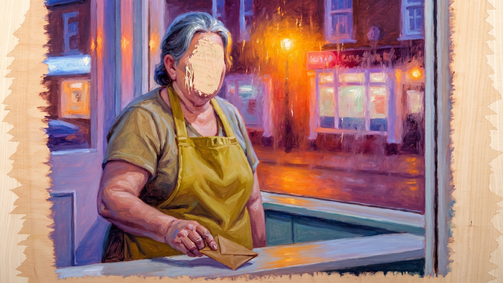

When I was seven my mother let me do the vinegar.
It was the best job in the shop. You held the bottle upside down over the chips and you counted to three. Mum said, not so much, Nell, we're not made of it. Then she winked and let me do it again.
I stood on a milk crate to reach. The windows were steamed up and the whole street was a smear of orange behind them, and I thought it was the most beautiful room in England.
Dad was in the back, counting the till. He always counted it twice.
On Fridays he gave Mum an envelope. She said, thank you, Keith, and put it in her apron. I thought that was what wages were.
It was years before I understood she had never had any.
Half past eight
Giles makes the coffee. He always makes the coffee. He warms the cup first, because he read that you should.
I do this with everyone, I can't help it: Giles is cream. Not magnolia, he'd be hurt. Proper double cream, the kind that costs more. He is thirty-nine and he has never once raised his voice, and he owns this flat, and the cup, and the coffee.
How's the big one coming, he says.
The big one is a painting. It is six feet across, it is of the sea at home, and it is the centre of my show in the spring. I have described it to him so many times I could draw it.
Getting there, I say. The light's wrong in the top third.
He nods. He loves this. He loves that I have a top third.
I pack my bag in front of him. Brushes, rolled in their canvas. Rags. A flask. The brushes are very clean. The bristles are as soft as a baby's hair.
On the shelf by the door there is a jam jar with twenty-pound notes in it. Giles thinks it's my float. He put a tenner in once, to be nice. I took it out when he'd gone and left it on his desk. It isn't that kind of jar.
My mother has posted me twenty pounds on the first of every month since I was nineteen. No letter. Just the note, folded in three, and on the flap of the envelope in biro: for paints.
Fifteen years. I have never asked her where a woman on housekeeping gets twenty pounds a month. You don't, in my family. You say thank you and you put it in your apron.
Every tube I have ever squeezed, she paid for. Including the ones in this.

It's the last thing I worked on. It's her, on a Friday, holding the envelope.
I have painted the face eleven times and I have scraped it off eleven times. I can do anyone's face. I can do a stranger on a bus from memory. I get as far as her mouth and I don't know what it's doing.
Giles hung it in the hall. He thinks the scraping is a statement.
Have a good one, he says. He kisses me on the forehead, like a man posting a letter. Don't forget Mum's on Sunday.
I won't.
I love you.
You too, I say. Which is true, and is also not the same thing.
Work
It takes me thirty-five minutes to walk to work. I could get the bus. I like to arrive having earned it.
It's white, where I work. Not one white. I counted once, on a slow day, and there are sixty-one, and I know every one of them by name and by what's really in it. The warmest is mostly yellow with a drop of black. People don't like being told that.
It's quiet at this hour. It smells of turps and sawdust. I sit where I always sit, on the floor, with my back against something solid. I get my brushes out and lay them in a row on the rag, in order of size.
Then I look.
That's the job. People think painting is the bit with the paint. It's mostly looking. I can look for seven hours. I have a flask.
At eleven Dev brings me a tea. He doesn't ask. He puts it down by my knee and says, any further on?
I think I'm close, I say.
No rush, love, he says, and goes away again.
Dev is the orange of a traffic cone. He has a daughter doing her GCSEs and a bad knee. He is the person I speak to most in the world, and he doesn't know my surname.
Ten past two
My phone goes at ten past two. It says DAD.
My father has rung me four times in my life. One of those was his pocket.
Your mother's passed, he says.
He says it the way he says, we're out of haddock.
I say, what.
This morning. I found her in the back, in the chair. Doctor says heart. Says it'd have been quick.
I look at the whites. I find the one that's mostly yellow and I hold on to it.
She had her coat on, he says. I don't know what she was playing at.
Then he tells me the funeral is Thursday week. He tells me he's had to shut the shop, and that's a day's takings gone already. He says that part twice.
You'll want to come, he says. I suppose.
My father is the brown of the inside of a teapot. I have never had to change that one.
I don't cry. I do what I always do, which is think about the wrong thing.
I think: it's the twenty-eighth. She posts it early, in case. So it's already gone. It's in a sorting office somewhere with my name on it in her biro, and on Saturday it is going to land on the mat. Twenty pounds, from a dead woman, for paints.
And then I think about going home.
I haven't been home in seven years. The last time, Jess Reid spat at my feet outside the Co-op, in front of her mother and a man selling poppies. Nobody in that street thought she was wrong. Including me.
Aisle fourteen
You all right, love?
It's Dev. He's got the trolley. Behind him a woman is holding two tester pots up to the strip light, trying to choose. They're the same colour. I nearly tell her.
We've got to do the bay, he says. Sorry. Restock. You can have aisle nine till four.
I should explain where I am.
I am on the floor of aisle fourteen of Homefront, on the ring road, between the emulsions and the masking tape.
I have come here every weekday since March.
I haven't had a studio for seven months. I haven't finished a painting in two years. There is no big one. There is no top third. There is no show.
The brushes are clean because nothing has touched them.
My mum's died, Dev, I say.
And Dev, who has watched me not choose a white for seven months, puts the brake on his trolley and sits down on the floor of aisle fourteen in his orange apron, bad knee and all.
He doesn't say anything. He gets a custard cream out of his top pocket and gives me half.
It is the first true thing I have said to anyone since March.
End of chapter one.